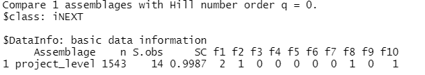
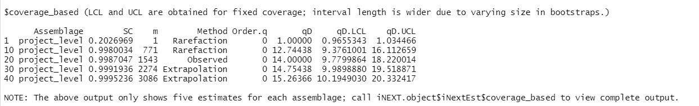
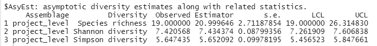
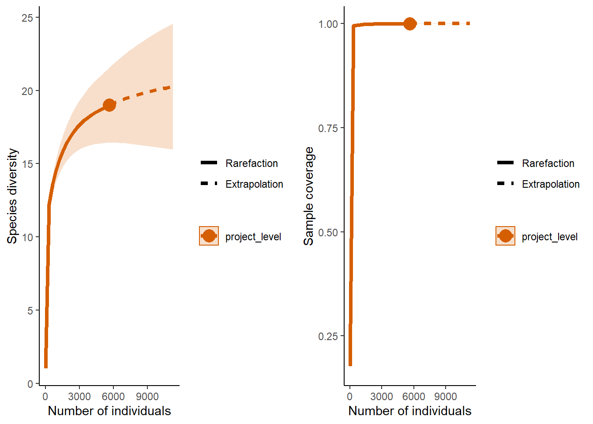
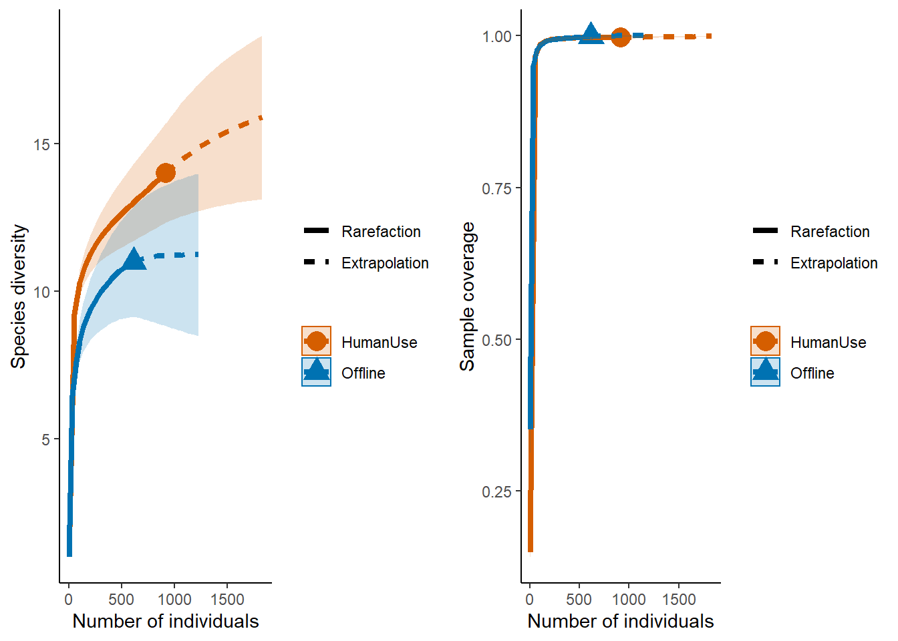
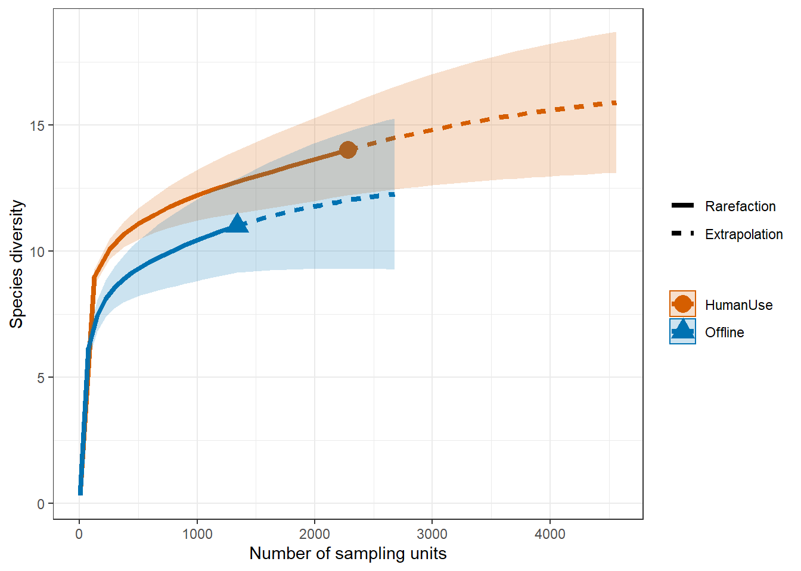
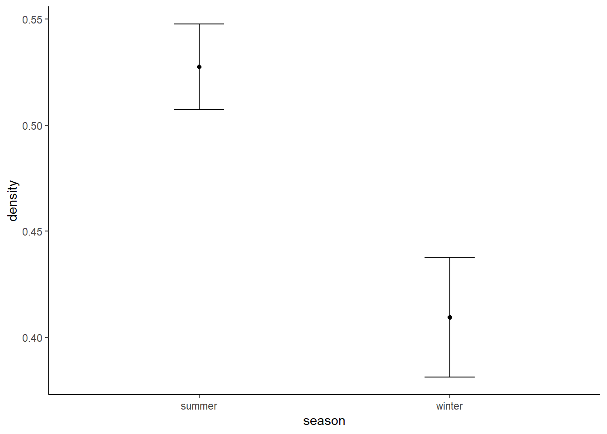

Chapter 8 Community composition
By Christopher Beirne and Laura Stewart
One of the most fundamental questions researchers and practitioners want to answer with camera traps is how many species are there in my survey area?. However, exploring patterns in species richness can also tell us if we have performed ‘enough’ surveying.
8.1 Observed richness
The simplest way to quantify species richness is counting the number of species you detect on your camera traps - ‘observed richness’. This is very easy to determine using our species list:
sp_summary <- read.csv("data/processed_data/AlgarRestorationProject_species_list.csv", header=T)
# Use nrow() to count the number of speciesIn the case of the example data set, this represents 19 species.
| class | order | family | genus | species | common_name | sp |
|---|---|---|---|---|---|---|
| Mammalia | Artiodactyla | Cervidae | Alces | alces | Eurasian elk | Alces.alces |
| Mammalia | Artiodactyla | Cervidae | Cervus | canadensis | elk | Cervus.canadensis |
| Mammalia | Artiodactyla | Cervidae | Odocoileus | virginianus | white-tailed deer | Odocoileus.virginianus |
| Mammalia | Artiodactyla | Cervidae | Rangifer | tarandus | reindeer | Rangifer.tarandus |
| Mammalia | Carnivora | Canidae | Canis | latrans | coyote | Canis.latrans |
| Mammalia | Carnivora | Canidae | Canis | lupus | gray wolf | Canis.lupus |
| Mammalia | Carnivora | Canidae | Vulpes | vulpes | red fox | Vulpes.vulpes |
| Mammalia | Carnivora | Felidae | Lynx | canadensis | Canada lynx | Lynx.canadensis |
| Mammalia | Carnivora | Felidae | Puma | concolor | puma | Puma.concolor |
| Mammalia | Carnivora | Mustelidae | Gulo | gulo | wolverine | Gulo.gulo |
| Mammalia | Carnivora | Mustelidae | Lontra | canadensis | Northern American river otter | Lontra.canadensis |
| Mammalia | Carnivora | Mustelidae | Martes | americana | American marten | Martes.americana |
| Mammalia | Carnivora | Mustelidae | Martes | pennanti | fisher | Martes.pennanti |
| Mammalia | Carnivora | Ursidae | Ursus | americanus | American black bear | Ursus.americanus |
| Mammalia | Lagomorpha | Leporidae | Lepus | americanus | snowshoe hare | Lepus.americanus |
| Mammalia | Lagomorpha | Leporidae | Oryctolagus | cuniculus | rabbit | Oryctolagus.cuniculus |
| Mammalia | Rodentia | Castoridae | Castor | canadensis | American beaver | Castor.canadensis |
| Mammalia | Rodentia | Sciuridae | Marmota | monax | woodchuck | Marmota.monax |
| Mammalia | Rodentia | Sciuridae | Tamiasciurus | hudsonicus | American red squirrel | Tamiasciurus.hudsonicus |
It is possible to compare observed richness across different strata of interest, however survey effort must be identical between your comparison strata. This very rarely the case in camera trap studies where cameras break, run out of battery or are deployed for different lengths of time.
The number of species you detect is a function of the amount of effort you spent surveying or the number of individuals detected - the longer a camera is active/the more individuals detected the more species it will detect. Observed richness typically underestimates true richness. Consequently, We need a way of comparing species richness which accounts in some way for survey effort.
8.2 Estimated richness
There are two commonly used ways to account for survey effort when estimating species richness using camera traps:
- using the incidence of rare species to ‘correct’ observed richness (non-parametric estimators)
- using multispecies occupancy models to account for the species present but not observed
8.2.1 1) Incidence patterns
8.2.1.1 iNext package
The iNext package (INterpolation and EXTrapolation of species richness) - is an easy to use and comes with a wealth of plotting functions - see the iNext Quick Introduction for a great walk through tutorial. Its core functionality is based on:
Chao et. al. (2014) Rarefaction and extrapolation with Hill numbers: a framework for sampling and estimation in species diversity studies. Ecological Monographs
To run this example code you will need iNEXT , ggplot2, and gridExtra packages.
library(iNEXT); library(ggplot2); library(gridExtra)Single strata
You may want to see if your camera project has sufficient survey effort to capture the species within the focal area. To do this we can produce species accumulation curves across the site as a whole. Species accumulation curves plot the increase in species richness as we add individuals or survey units. If the curve plateaus, flattens, then that suggests you have sampled the majority of the species in your survey area.
Data formatting
Applying the iNEXT functions to camera trap data is perhaps simplest using ‘abundance’ function, this represents the frequency with which each species is detected. Implementing the abundance data requires a string of abundance frequencies contained within a list. We can create this format from the total observations dataset we crated:
# Import the total observations dataset
total_obs <- read.csv("data/processed_data/AlgarRestorationProject_30min_independent_total_observations.csv", header=T)
# Make an empty list to store our data
project_level <- list()
# Sum all of the observations of each species (colSums), and then make it an element in the list
project_level[[1]]<- colSums(total_obs[, sp_summary$sp])
# Give it a name
names(project_level) <- "project_level"This will produce a list object which looks like this:
## $project_level
## Alces.alces Cervus.canadensis Odocoileus.virginianus
## 554 2 1845
## Rangifer.tarandus Canis.latrans Canis.lupus
## 470 162 510
## Vulpes.vulpes Lynx.canadensis Puma.concolor
## 24 185 1
## Gulo.gulo Lontra.canadensis Martes.americana
## 3 4 89
## Martes.pennanti Ursus.americanus Lepus.americanus
## 9 855 793
## Oryctolagus.cuniculus Castor.canadensis Marmota.monax
## 6 4 1
## Tamiasciurus.hudsonicus
## 125Analysis
Once you have created your list, it is simple to run a basic iNEXT analysis, and create a graphs of the result. Below we show a basic iNEXT call with some of its default arguments.
out <- iNEXT(project_level, # The data frame
q=0, # The type of diversity estimator (see below)
datatype="abundance", # The type of analysis
knots=40, # The number of data points in your line (more = smoother)
se=TRUE, # Logical statement if you want confidence intervals
conf=0.95, # The level of confidence intervals
nboot=50) # The number of replications to perform - this generates your confidence interval - the bigger the number the longer the run timea note on q values
The iNEXT package uses the concept of hill numbers to calculate its community indices. The values of q reflect traditional diversity estimators:
- 0 = species richness
- 1 = Shannon diversity
- 2 = Simpson diversity
a note on coverage
Whilst many uses will be familier with diversity indices, iNEXT also calculates ‘sample coverage’ - the proportion of the total number of individuals that belong to the species detected in the sample. The way to think about this is, if you an an unsurveyed individual to the population you have surveyed, what is the likelyhood it belongs to the species not already detected? If your sample coverage is high, this probability will be very low!
We will start with observed richness.
The iNEXT() function returns the “iNEXT” object including three output lists:
- $DataInfo for summarizing data information
- $iNextEst for showing size- and coverage-based diversity estimates along with related
statistics for a series of rarefied and extrapolated samples
- $AsyEst for showing asymptotic diversity estimates along with related statistics.
outLets check out each one in turn:
$DataInfo is shown below, returns summary data such as the reference sample size (n), observed species richness (S.obs - which is hopefully the same as what we calculated above), sample coverage estimate for the reference sample (SC), and the first ten frequency counts (f1‐f10).

$iNextEst output includes two data frames: $size_based and $coverage_based.
Let’s first look at $iNextEst$size_based:

Next $iNextEst$coverage_based:

$AsyEst gives the asymptotic estimates and their related statistics.

One of the powerful elements of iNEXT is that it can extrapolate beyond your data, this is very useful when you do not have equal sample sizes.
8.3 Basic results plot
p1 <- ggiNEXT(out, type=1)+ theme_classic() # type 1 = the diversity estimator
p2 <- ggiNEXT(out, type=2)+ theme_classic() # type 2 = the survey coverage
grid.arrange(p1, p2, nrow = 1)
At this end of this section we will demonstrate how to create your own plots using the iNEXT output.
Multiple strata
The iNEXT package gets really interesting when we start to compare multiple different strata. e.g. different treatment types or species groupings.
The code to build a multi strata comparison is very similar to that of a single strata, except now you separate the observations into their relevant categories.
We will now compare the different categories in the To make this split, we refer to the ‘camera_locations.csv’ dataframe, which contains the ‘feature_types’ for each camera station. We match the ‘placenames’ in our locations dataframe with the corresponding capture data in total_obs using the %in% command (this is one of our favourite commands).
# Read in the locations data frame
locs <- read.csv("data/processed_data/AlgarRestorationProject_camera_locations.csv")
# We first want to create a data subset for each of the strata we are interested in:
# The treatment types for each Deployment.Location.ID are in the sta file
# Make an object containing all of the site ID's for the "Offline" cameras
off <- locs$placename[locs$feature_type=="Offline"]
# And "HumanUse" cameras
hum <- locs$placename[locs$feature_type=="HumanUse"]
# Create a new empty list
strata <- list()
# Only sum the data for each relvent strata
strata[[1]] <- colSums(total_obs[total_obs$placename %in% off, sp_summary$sp])
strata[[2]] <- colSums(total_obs[total_obs$placename %in% hum, sp_summary$sp])
# Give them names
names(strata) <- c("Offline", "HumanUse")Then, as before, run your iNEXT model and examine the output:
out <- iNEXT(strata, datatype="abundance")
p1 <- ggiNEXT(out, type=1)+ theme_classic()
p2 <- ggiNEXT(out, type=2)+ theme_classic()
grid.arrange(p1, p2, nrow = 1)
From the plot on the left you can see that the ‘HumanUse’ strata detected more species than the ‘Offline’ strata. The plot on the right suggests that we have likely sampled all of the species that will be detected within these habitats (samples are ‘complete’).
8.4 Sampling-unit-based incidence data
The example above is useful, but we typically do not think about our survey effort in terms of the number of individuals we catch, rather we think about the number of camera stations we deploy on the landscape, or perhaps units of time (e.g. camera days).
Performing our species accumulation curves using survey location, rather than individuals encountered, allows us to determine if we have enough survey locations in a given strata to detect all of the species present.
Performing the analyses using camera_days would also give insight into whether we need for survey effort in a given location.
The dataformatting for a sampling-unit based accumulation curve is diffferent to that of an individual-based curve. As before we need a list of strata, however now we need the elements in the list to represent the number of sampling units first, then the number of those unites where a given species was detected follow it:
8.4.1 Survey station example
Lets build this example for survey stations
# As before we can use out total_obs dataframe.
inc_dat <- total_obs %>% mutate(across(sp_summary$sp, ~+as.logical(.x)))
# Create a new empty list
inc_locations <- list()
# Only sum the data for each relvent locations
inc_locations[[1]] <- c(length(off), # Count the number of stations
# Then subset the detections to those stations, sum the columns, and sort the incidents
inc_dat[inc_dat$placename %in% off, sp_summary$sp] %>% colSums() %>% sort(decreasing=T))
inc_locations[[2]] <- c(length(hum), # Count the number of stations
# Then subset the detections to those stations, sum the columns, and sort the incidents
inc_dat[inc_dat$placename %in% hum, sp_summary$sp] %>% colSums() %>% sort(decreasing=T))
# Give them names
names(inc_locations) <- c("Offline", "HumanUse")out.inc <- iNEXT(inc_locations, q=0, datatype="incidence_freq")
# Sample‐size‐based R/E curves
ggiNEXT(out.inc, type=1, color.var="Assemblage") +
theme_bw() 
8.4.2 Sampling duration example
If we want to explore the species accumulation patterns as a function of the number of survey nights, we can make use of the ‘obs_week’ dataframes.
week_obs<- read.csv("data/processed_data/AlgarRestorationProject_30min_independent_weekly_observations.csv", header=T)
# As before we can use out total_obs dataframe.
inc_dat <- week_obs %>% mutate(across(sp_summary$sp, ~+as.logical(.x)))
# Create a new empty list
inc_time <- list()
# Only sum the data for each relvent strata
inc_time[[1]] <- c(nrow(inc_dat[inc_dat$placename %in% off,]), # Count the number of weeks we have data for in each strata
# Then subset the detections to those stations, sum the columns, and sort the incidents
inc_dat[inc_dat$placename %in% off, sp_summary$sp] %>% colSums() %>% sort(decreasing=T))
inc_time[[2]] <- c(nrow(inc_dat[inc_dat$placename %in% hum,]), # Count the number of stations
# Then subset the detections to those stations, sum the columns, and sort the incidents
inc_dat[inc_dat$placename %in% hum, sp_summary$sp] %>% colSums() %>% sort(decreasing=T))
# Give them names
names(inc_time) <- c("Offline", "HumanUse")out.inc <- iNEXT(inc_time, q=0, datatype="incidence_freq")## Warning in Fun(x[[i]], q, names(x)[i]): Insufficient data to provide reliable
## estimators and associated s.e.
## Warning in Fun(x[[i]], q, names(x)[i]): Insufficient data to provide reliable
## estimators and associated s.e.# Sample‐size‐based R/E curves
ggiNEXT(out.inc, type=1, color.var="Assemblage") +
theme_bw() 
8.5 Other diversity metrics
8.5.1 Simpson and Shannon
One issue with species richness assessments is that they weight all species equally, thus a community with 12 species all present in equal abundances will give you the same richness value as a high skewed community with one highly abundant species, and 11 very rare ones. Consequently, you might want to estimate species diversity.
Luckily, the iNEXT package is well suited for comparisons of diversity indices through the use of hill numbers - of which the ‘q’ value represents the traditional Shannon (q=1) and Simpson (q=2) diversity indices (species richness: q = 0). Note Increasing values of q reduces the influence of rare species on your estimate of community diversity.
For example, we might want to compare the species diversity across our two focal strata:
# We also introduce the object t -> which reflects the range of values over which you want to predict species richness
out <- iNEXT(inc_time, q=c(0,1,2) ,datatype="incidence_freq" )## Warning in Fun(x[[i]], q, names(x)[i]): Insufficient data to provide reliable
## estimators and associated s.e.
## Warning in Fun(x[[i]], q, names(x)[i]): Insufficient data to provide reliable
## estimators and associated s.e.ggiNEXT(out, type=1, facet.var="Order.q", color.var="Assemblage") + theme_classic() 
The plot above shows that the differences between our two strata remain across increasing q values (suggesting that the different inst just driven by several rarely encountered species).
Point estimates and their confidence intervals can also be extracted from iNEXT model objects - but it does require a little data wrangling. For example, if we wanted to directly compare the diversity estimates of our strata at 1000 survey units:
# To generate predictions for specific amounts of survey effort, we make use of the variable t
# T specifies the values you want iNEXt to calculate diversity for
out <- iNEXT(inc_time, q=c(0,1,2) ,datatype="incidence_freq", size=c(1000))## Warning in Fun(x[[i]], q, names(x)[i]): Insufficient data to provide reliable
## estimators and associated s.e.
## Warning in Fun(x[[i]], q, names(x)[i]): Insufficient data to provide reliable
## estimators and associated s.e.# The lapply function applies the same logic across elements in a list
point_estimate <- out$iNextEst$size_based[out$iNextEst$size_based$t==1000,]
point_estimate## Assemblage t Method Order.q qD qD.LCL qD.UCL SC
## 1 Offline 1000 Rarefaction 0 10.429632 8.793310 12.065955 0.9936851
## 5 Offline 1000 Rarefaction 1 5.176220 4.647971 5.704469 0.9936851
## 9 Offline 1000 Rarefaction 2 3.625471 3.162830 4.088112 0.9936851
## 13 HumanUse 1000 Rarefaction 0 12.203861 11.104158 13.303564 0.9943139
## 17 HumanUse 1000 Rarefaction 1 8.135712 7.703718 8.567707 0.9943139
## 21 HumanUse 1000 Rarefaction 2 7.023530 6.601112 7.445948 0.9943139
## SC.LCL SC.UCL
## 1 0.9892543 0.9981159
## 5 0.9892543 0.9981159
## 9 0.9892543 0.9981159
## 13 0.9912546 0.9973733
## 17 0.9912546 0.9973733
## 21 0.9912546 0.9973733# Make a nice ggplot!
ggplot(point_estimate, aes(x=c(-0.1,0.9, 1.9,
0.1, 1.1, 2.1), y=qD, colour=Assemblage)) +
theme_classic() +
#scale_x_discrete(breaks=c("1","2"),labels= c("1","2")) +
geom_errorbar(aes(ymin=qD.LCL, ymax=qD.UCL), width=.01) +
labs(y="Diversity", x = "Diversity at 1000 survey units") +
geom_point() 
Notes These two examples just scratch the surface of the functionality of the iNEXT package, and the ways of using it with camera data.
Examples
Some examples of using iNEXT with camera trap data:
Cusack et al. 2015 Random versus Game Trail-Based Camera Trap Placement Strategy for Monitoring Terrestrial Mammal Communities
Kays et al. 2020 An empirical evaluation of camera trap study design: How many, how long and when?
Semper-Pascual et a. 2018 Mapping extinction debt highlights conservation opportunities for birds and mammals in the South American Chaco
Publishing note
If you publish your work based on the results from the iNEXT package, you should make references to the following methodology paper (Chao et al. 2014) and the application paper (Hsieh, Ma & Chao, 2016):
Chao, A., Gotelli, N.J., Hsieh, T.C., Sander, E.L., Ma, K.H., Colwell, R.K. & Ellison, A.M. (2014) Rarefaction and extrapolation with Hill numbers: a framework for sampling and estimation in species diversity studies. Ecological Monographs, 84, 45–67.
Hsieh, T.C., Ma, K.H. & Chao, A. (2016) iNEXT: An R package for interpolation and